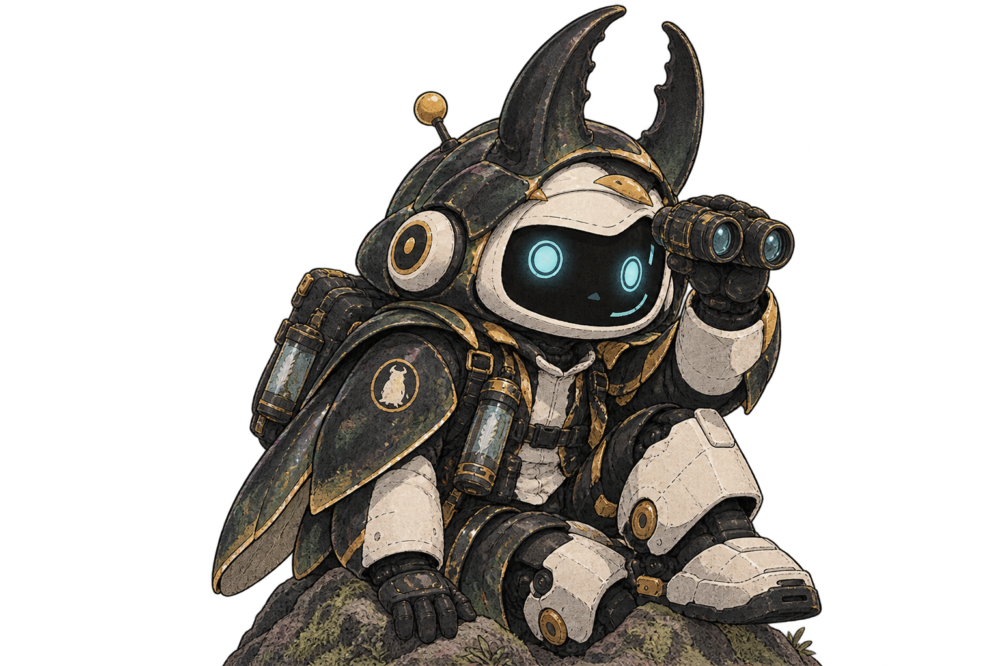
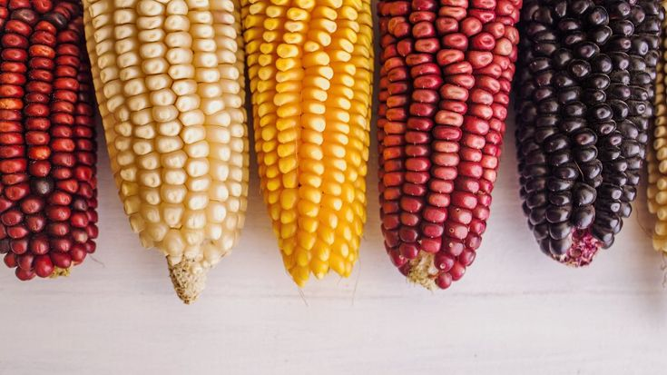
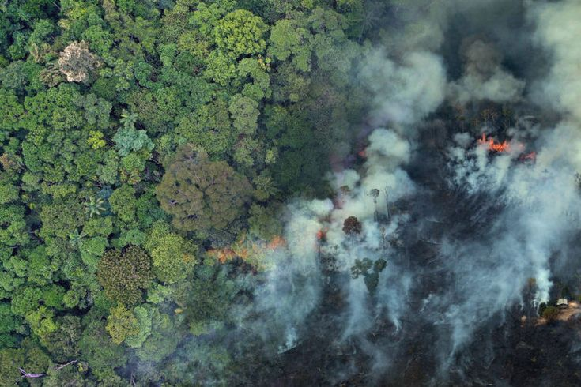

Ruang Baca
pilih buku di rak untuk mulai membaca
I. Tingkat Keanekaragaman Hayati
Pengertian Keanekaragaman Hayati
Keanekaragaman hayati (biodiversitas) adalah keseluruhan variasi yang ditemukan pada makhluk hidup di suatu wilayah, baik yang tampak dari luar (fenotipe) maupun yang tersimpan dalam susunan genetiknya (genotipe). Keragaman ini terjadi pada tiga tingkatan utama: gen, spesies, dan ekosistem.
Keanekaragaman Gen
Keanekaragaman gen adalah variasi susunan gen yang terjadi antarindividu dalam satu spesies yang sama, sehingga menghasilkan perbedaan sifat meskipun individu-individu tersebut masih tergolong dalam satu jenis.
Variasi gen dapat muncul secara alami melalui rekombinasi gen saat reproduksi seksual maupun mutasi. Selain itu, manusia juga berperan menciptakan variasi baru melalui hibridisasi (persilangan antarvarietas atau antarspesies kerabat dekat) dan domestikasi (proses menjinakkan serta membudidayakan makhluk liar dalam lingkungan yang terkontrol), yang keduanya banyak dimanfaatkan dalam pertanian dan peternakan.
Contoh:
- Varietas padi: IR64, Ciherang, Rojolele
- Varietas mangga: mangga harum manis, mangga gadung, mangga golek
- Variasi warna dan bentuk tubuh pada kucing atau anjing peliharaan

Keanekaragaman Spesies
Keanekaragaman spesies adalah variasi yang ditemukan antarspesies yang berbeda, baik dalam satu genus maupun famili yang sama. Perbedaan ini mencakup bentuk tubuh, ukuran, warna, jumlah, hingga pola tingkah laku.
Contoh: famili kucing (Felidae) yang beragam mulai dari kucing rumah, harimau, hingga singa; atau famili kacang-kacangan (Fabaceae) yang mencakup kacang tanah, kacang hijau, dan kacang kedelai.

Keanekaragaman Ekosistem
Keanekaragaman ekosistem terbentuk dari interaksi antara komponen biotik (makhluk hidup) dan abiotik (faktor fisik seperti suhu, cahaya, kelembapan, dan jenis tanah) yang berbeda-beda di tiap wilayah. Perbedaan kombinasi ini menghasilkan berbagai bentuk ekosistem dengan komunitas makhluk hidup yang khas satu sama lain — akan kita jelajahi lebih jauh pada Buku II.

II. Tipe Ekosistem
Pengertian Ekosistem
Ekosistem adalah suatu sistem yang terbentuk dari hubungan timbal balik antara komponen biotik dan abiotik pada suatu lingkungan tertentu, yang saling memengaruhi dan membentuk satu kesatuan fungsional.
Ekosistem Perairan (Akuatik)
Ekosistem akuatik adalah ekosistem yang didominasi oleh lingkungan air, baik air tawar maupun air laut. Faktor pembatas utamanya meliputi intensitas cahaya yang menembus air, kadar oksigen terlarut, arus, serta salinitas (kadar garam).
Berdasarkan cara hidup dan posisinya di dalam air, organisme akuatik dapat dikelompokkan menjadi:
- Plankton — organisme berukuran umumnya mikroskopis yang melayang mengikuti arus air, terdiri dari fitoplankton (plankton tumbuhan) dan zooplankton (plankton hewan).
- Nekton — organisme yang mampu berenang aktif melawan arus, misalnya ikan, cumi-cumi, dan paus.
- Neuston — organisme yang hidup atau mengapung tepat di permukaan air, misalnya serangga air.
- Bentos — organisme yang hidup di dasar perairan, baik dengan menempel maupun merayap, misalnya kerang dan bintang laut.
- Perifiton — organisme yang menempel pada benda atau tumbuhan di dalam air, misalnya alga yang melekat pada batu atau batang tumbuhan air.

Perairan Tawar
Danau, sungai, dan rawa dengan salinitas rendah.

Perairan Laut
Laut, terumbu karang, dan estuari dengan salinitas tinggi.
Ekosistem Darat
Ekosistem darat (bioma) adalah ekosistem besar berbasis daratan yang tersebar berdasarkan letak lintang dan iklim, sehingga membentuk komunitas tumbuhan dan hewan khas di tiap wilayahnya.

Hutan Hujan Tropis
Curah hujan tinggi sepanjang tahun, vegetasi lebat berlapis, keanekaragaman tertinggi di antara bioma lain.

Sabana
Padang rumput luas dengan pohon/semak tersebar jarang, musim kemarau panjang.

Padang Rumput
Didominasi rerumputan, curah hujan lebih rendah dari sabana, hampir tanpa pohon.

Gurun
Curah hujan sangat rendah, vegetasi jarang dan teradaptasi khusus, suhu ekstrem.
.jpg)
Hutan Gugur
Empat musim, pohon menggugurkan daun saat musim dingin/gugur.

Taiga
Hutan konifer, musim dingin panjang, didominasi pohon berdaun jarum.
.jpg)
Tundra
Wilayah terdingin, tanah membeku (permafrost), vegetasi rendah seperti lumut.